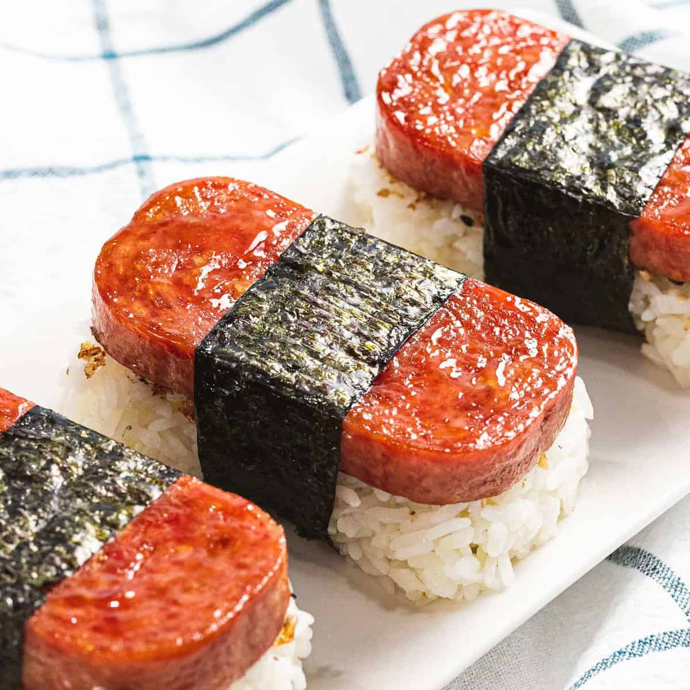

Spam Musubi Recipe

A delicious on-the-go snack made out of rice and shoyu glazed spam wrapped in nori.
It was popularized after World War II since it was sent to troops stationed in Hawaii.
What is Spam?
Spam is canned meat that comes in different flavours such as tocino, teriyaki or Szechuan.
The original spam flavour is commonly used for this recipe.It is a food staple for many
Hawaiians and can be eaten for breakfast, lunch and dinner.
Make your own Musubi mold
Musubi molds can be purchased online, but can also be made at home using the can of the spam.
You will need to take both sides of the lid off, clean out the can and cut it half of the
original height. Make sure to get rid of the sharp edges.
Prep Time: 25 mins
Cook Time: 5 mins
Ingredients:
- 1 can of Spam cut into 1/4 in pieces
- 1/2 cup soy sauce
- 1/2 cup mirin
- 1/2 cup sugar
- 2 tbsp sesame oil
- Nori roasted seaweed cut into thirds
- 6 cups of cooked rice
Steps
- Combine and mix soy sauce, mirin, sugar and sesame oil into a ziploc bag
- Add spam into ziploc bag and let it marinate for 10-15 minutes
- Cook spam over medium heat frying pan until spam is crispy
- Glaze excess marinate over spam
- Place a strip of nori on a clean surface, shiny side down. Place musubi mold across
the middle of nori. Add cooked rice into the mold, pressing down firmly until 1 inch thick
- Remove mold from rice. A bit of marinate can be added on rice if desired. Add a piece of
cooked spam on top
- Wrap one side of the nori and stick it on top of the spam, then wrap the other side. Use a
a small amount of water on finger to seal if needed
Note: Spam musubi can be individually wrapped with plastic wrap to store and eat for later